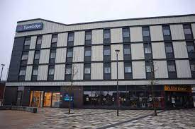
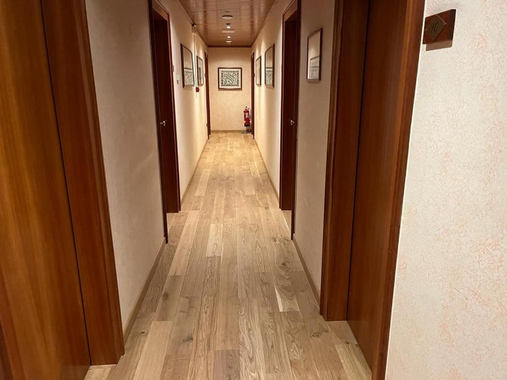

Order custom essay Travelodge: From San Diego to the UK, a Growing Budget Hotel Brand with free plagiarism report
The Travelodge brand was founded by Scott King (Travelodge Corporation Founder) from America. And the first Travelodge was established in San Diego in 1940. Travelodge has several hotel chains around the world and many of them are operated under independent companies without having connection with brand operating in other countries. Travelodge in UK Travelodge in UK was founded in 1985 which brand was bought in 1980 by the same person Lord Forte.  It is the first budget hotel brand and now the fastest growing hotel company.
Currently Travelodge is serving all over the UK and in Republic of Ireland and Spain. Travelodge has become second largest budget hotel brand and third biggest hotel chain in UK as it contains approximately 26,148 rooms within 368 hotels. And since August 2006, till now Travelodge in UK is operated under Dubai International Capital. Newly designed rooms are decorated in new buildings and refurbished hotels. Every Travelodge in UK contain family rooms, double rooms and disabled rooms. Each rooms feature en-suite bathroom and heater attached in lower wall.
Order custom essay Travelodge: From San Diego to the UK, a Growing Budget Hotel Brand with free plagiarism report
Free tea and coffee with kettle is available on attached table. Wi-Fi internet connection is available at all hotels with the small charge add. Whereas for food and beverage there is bar cafe and vending machine in those almost every hotel except very old ones which are very near to other restaurant. These are overall facilities and other more are there. Situation Analysis PEST Political Analysis The rules and regulation is being changing very frequently for the international students which will affect the daily purpose of the Travelodge. Because than half of the workers are international students in Travelodge. But due to the changing rules and regulation, the under graduate students dont get work permit from 2012 and those workers must leave the job at once. Last time when there was a great festival of Nepalese people the 50% of Travelodge in UK were in shortage of housekeepers because most of those international workers and students went back to there country for celebrating their festival. So the changing regulation might affect the smoothness of Travelodge because more than half of the workers are international students in almost every Travelodge.
Economical Analysis Economically Travelodge is in very good situation as it is fastest growing hotel and is providing the room in low price. This year Travelodge is proving various special discount offers in every month. Just this March, Travelodge provide a room in 10000naira per night. And Travelodge in UK is also adding 3000 room per year which shows their economic situation is quite good. Social Analysis Nowadays the peoples travel more due to the availability and flexibility of the Travelodge. Their living style is changing as they can afford the hotel rooms.

Travelodge has become the needy facility and services in society due to the cheapness, flexibility and mobility of it. Technical Analysis Online reservation system is very famous in Travelodge. 80% of booking is made online in Travelodge. The rooms door is opened with car key. Even check-in and check-out can be done in machine inside the Travelodge. Advance online payment is most famous and profitable for both the Travelodge and customers. SWOT Strength In present situation, Travelodge in London is considered as fastest growing hotel chain.
They are achievable since its carried out in many places at once. And also The Flagship London Hotel Opening is helping them for this 2012 development project. It is moreover almost completed. And its becoming fast because some new Travelodges are acquired one. Like Chaucher hotel is now going to be converted into 60 rooms Travelodge. Realistic It is in smooth under process as far as 2012 is coming nearer. But it wasnt that complicated because this project was started from 2007. So every developments are being conducted slowly by estimating the proper time and plan.
previous page Go to the contact info